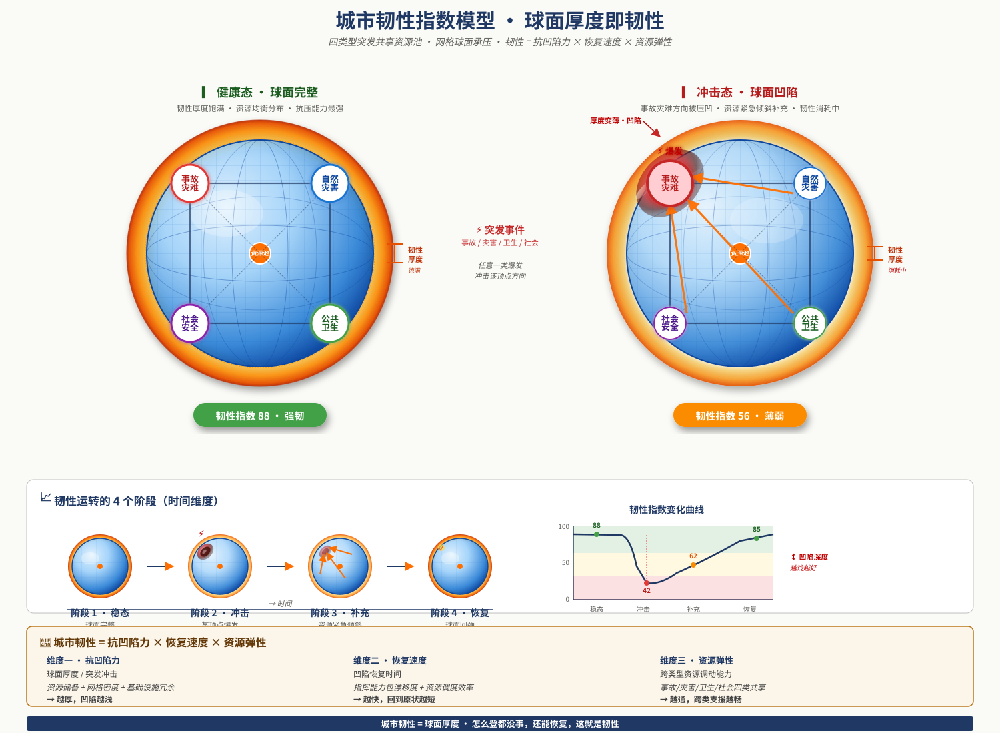

应急风险本体论 × 五层架构
把“出事后响应”升级为“风险常态在场”
这个驾驶舱把白皮书里的建设逻辑压缩成一套客户可感知的演示界面：用本体统一风险世界，用双循环解释平台如何运转，用韧性指数说明平台为什么持续创造价值。
核心命题
以前出事才花钱，现在不出事也值钱。
看到的是投入价值：风险被提前看见、资源被提前部署、事件来时直接激活已有能力。
客户方案驾驶舱
应急 AI 平台架构应急风险本体论 × 五层架构
这个驾驶舱把白皮书里的建设逻辑压缩成一套客户可感知的演示界面：用本体统一风险世界，用双循环解释平台如何运转，用韧性指数说明平台为什么持续创造价值。
看到的是投入价值：风险被提前看见、资源被提前部署、事件来时直接激活已有能力。
传统系统把注意力集中在 L5 事件处置，平台价值只能在“发生了什么”之后被统计。
用对象、关系、动作、时空建立风险本体，让监测、研判、预防、响应都落在同一语义底座上。
五层架构承载平台建设，双循环范式承载运行机制，韧性指数承载价值表达。
从“事件触发后从零组织响应”转向“事件触发后激活已有部署”。
OPC Strategic Dashboard Skill · 本地迁移版
按 OPC 四层架构重组当前方案：主题层负责方向，任务层负责推进，脑层负责产出，成本层负责节奏与回流。
L1-L5 平台架构
五层架构不是功能清单，而是一套从风险资产到应急行动的闭环系统。
当前层级
L1 是平台的语义底座。风险源、承灾体、应对力量、决策主体、信息载体被统一建模，后续监测、研判、预防和响应才不是孤立功能。
解决“第二跳之后失效”：暴雨、内涝、危化、交通等关系被建成本体关系层。
每个判断都能回到数据、规则、案例与推理链，让 AI 建议可审计、可复盘。
处置完成后把实际级联路径、阈值偏差、新风险点回写 L1，让平台越用越聪明。
客户共创原创模型
风险点是双环关联枢纽。常态环事前持续运转，应急环事后激活，处置复盘再回写本体。
城市韧性指数模型
韧性不是口号，而是抗凹陷力、恢复速度、资源弹性的乘积式表达。
强韧：资源厚度充足，跨类调度顺畅。

从白皮书到可交付方案
每一步都对应客户可验收的成果，不停留在概念层。
选 3-5 个高价值风险场景，建立最小风险本体、监测接入和研判样例。
交付：本体样板库 + 双循环演示屏围绕级联推演和决策可解释建立 L3 旗舰能力，形成可汇报的差异化模组。
交付：级联推演大屏 + 解释链档案打通 L1-L5，形成事件即激活、处置闭环、复盘回写本体的完整机制。
交付：平台闭环验收包 + 回写规范把通用本体、指标体系、建设方法和演示驾驶舱沉淀为咨询输出资产。
交付：跨城复制手册 + 标准方案包适合首次拜访客户，用驾驶舱讲清楚范式价值和双循环逻辑。
适合面对建设方，把 L1-L5 拆成可实施、可验收、可招采的能力包。
适合面对主官或评审，用韧性指数和回写闭环证明投入价值。